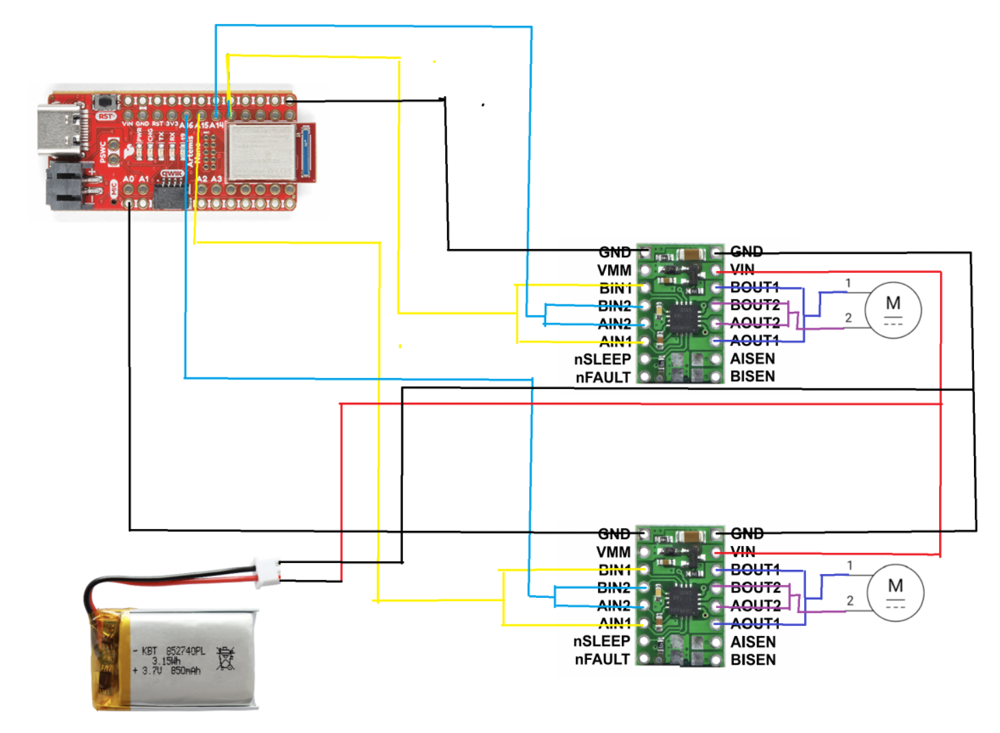
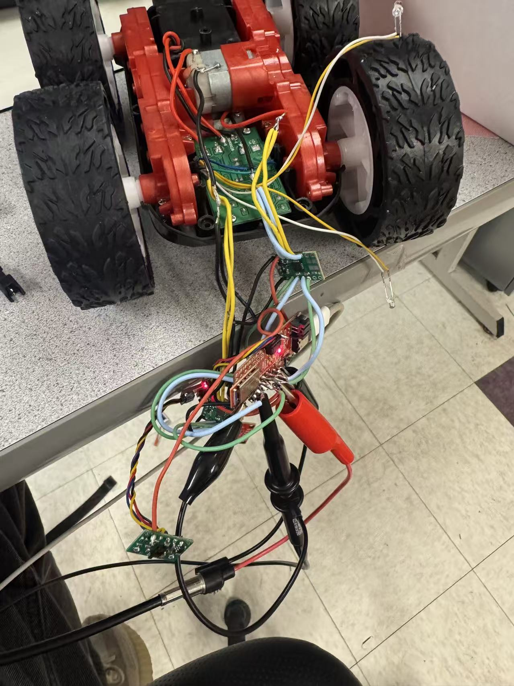
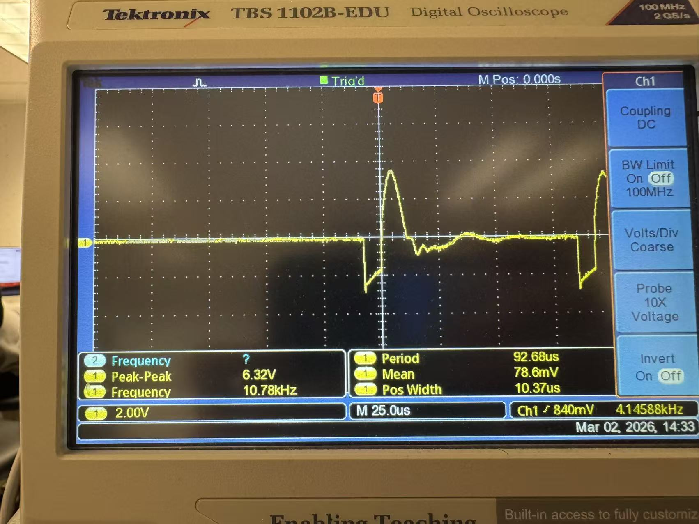

Placeholder:
images/lab4_fig4_car_layout.jpgHetao Yin (Hubery) — ECE 5160 Fast Robots
Goal: solder and wire two motor drivers to the Artemis and car, use analogWrite() PWM to control motor power,
then demonstrate untethered open-loop driving with turns.

images/lab4_fig1_connections.pngThe Artemis and motors are powered by separate batteries (common ground). This reduces brownouts/noise on the Artemis when the motors draw high transient current (startup / stall). The motor drivers are powered from a 3.7V LiPo (850mAh), while the Artemis uses its own battery.

images/lab4_fig2_setup_supply_scope.jpgI set the bench supply to 3.7V (matching the LiPo motor battery). Current limit was set conservatively at first and increased only as needed for motor startup (to avoid damage during debugging).
Snippet used to drive forward/backward by swapping which input gets PWM:
analogWrite(sigA1, 0);
analogWrite(sigA2, 150);
analogWrite(sigB1, 0);
analogWrite(sigB2, 150);
delay(2000);
analogWrite(sigA1, 150);
analogWrite(sigA2, 0);
analogWrite(sigB1, 150);
analogWrite(sigB2, 0);
delay(2000);
images/lab4_fig3_scope_pwm.jpgimages/lab4_vid2_battery_both_wheels.mp4
images/lab4_fig4_car_layout.jpgOn the ground, I decreased PWM to find the minimum values for (1) forward motion and (2) on-axis turns. Starting from rest required slightly higher PWM than maintaining motion once moving (static vs kinetic friction).
images/lab4_vid3_straight_line_2m.mp4My robot drifted due to left/right motor mismatch. I applied a calibration factor to one side (scale PWM) and verified a straighter trajectory by following a taped line for at least 2m/6ft.
// example: scale one side
analogWrite(L_PWM, base);
analogWrite(R_PWM, (int)(base * adjust));images/lab4_vid3_straight_line_2m.mp4Timed open-loop sequence (straight + turn + straight + turn):
// straight
driveForward(2000);
// on-axis turn
turnRight(250);
// straight
driveForward(2000);images/lab4_vid4_open_loop_turns.mp4
I did not finish the optional timer/PWM-frequency experiments due to hardware issues. In general, the default
analogWrite() PWM is typically fast enough for small DC motors because the motor inertia averages the pulses.
A higher PWM frequency can reduce audible buzzing and make low-speed motion smoother, but may increase switching losses in the driver.
I did not complete the optional “lowest running PWM” tests due to instability during robot testing. Conceptually, the PWM needed to start from rest is higher than the PWM needed to keep moving once in motion (static vs kinetic friction). A practical open-loop approach is to apply a brief higher “kick” PWM to start, then drop to the lowest PWM that maintains motion for the slowest speed.
In this LAB, I use AI to polish the whole writing report.